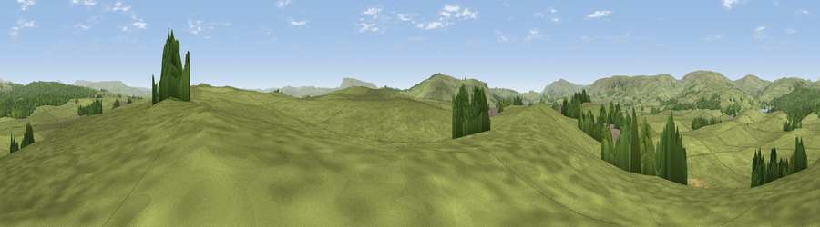

Viewpoint near Slaidburn
#21723 in England · top 57% of its area beats it · near SlaidburnThe view, rendered

A 360° render of this exact spot computed from the terrain model, tree cover and land cover — summer colours, afternoon light, calibrated against photographs of famous viewpoints. Real trees, hedges and buildings will differ in detail.
The panorama
Grey silhouette: terrain skyline in each direction (720 bearings, Earth curvature and refraction included). Dashed green: skyline with trees (+15 m) and buildings (+8 m) as obstacles. Blue strip: how far the ground is visible on each bearing.
Where the view opens
Wedge length = distance to the farthest visible ground on that bearing (vegetation-aware). Rings at 10, 25 and 50 km.
What fills the view
91% grassland · 9% woodland
Angular shares of the visible panorama (visual magnitude), not map area. Landscape diversity 0.14 (0–1 Shannon).
Key numbers
More beautiful places nearby
The staircase of upgrades: each row has a higher view potential than everything closer. Driving times are estimates from straight-line distance, calibrated against real road routing — check an actual route before setting out.
| Place | Direction | Drive | Score |
|---|---|---|---|
| Viewpoint near Slaidburn | SSE · 2 km | ~5 min | 59.8 |
| Viewpoint near Tosside | E · 2 km | ~6 min | 64.0 |
| Viewpoint near Tosside | E · 2 km | ~6 min | 66.2 |
| Viewpoint near Newton | SSW · 5 km | ~11 min | 69.2 |
| Whelpstone Crag | NNE · 6 km | ~13 min | 71.7 |
| Viewpoint c9206_7443 | NNW · 7 km | ~15 min | 72.3 |
| Viewpoint c9212_7400 | NNW · 8 km | ~16 min | 72.5 |
| Hailshowers Fell | NNW · 9 km | ~17 min | 73.8 |
53.97624, -2.39523 · source: screening · position refined by local search. Computed location — check access rights before visiting.